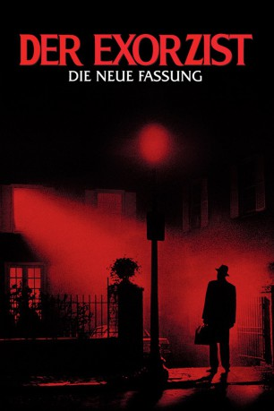

#5918 Der Exorzist
Alternativ: The Exorcist
Auszeichnungen: 2 Oscars gewonnen für 8 Oscars nominiert 4 GoldenGlobes gewonnen
 
 IMDB-Wertung: 8.0 / 10
IMDB-Wertung: 8.0 / 10  IMDB-TOP-Platzierung: 246
IMDB-TOP-Platzierung: 246  Metascore: 0
Metascore: 0 
Gräßliche Dämonen haben von der 12jährigen Regan (Linda Blair) Besitz ergriffen. Zwei Jesuitenpater versuchen, das verunstaltete Mädchen durch Teufelsaustreibung zu retten. William Friedkins perfekt inszinierter Psychothriller löste bei seiner Erstaufführung weltweit Skandale aus. Reihenweise verließen schockierte Zuschauer die Kinos. Presse und Publikum waren fasziniert und entsetzt über den mit 3 Oscars ausgezeichneten Film. Heute gehört der "Exorzist" zu den Kultfilmen seines Genres.
Jahr: 1973
Dauer: 132 Minuten
FSK: 16
Land: USA Studio: Warner Bros.Tonspuren:
Untertitel: Deutsch,
Auflösung: 1080p (1920x1080) Größe: 10956 MB
Genre: Horror
Regisseur:  William Friedkin
William Friedkin
Drehbuch: Mario Krebs
Soundtrack:
Darsteller:
 Ellen Burstyn als Chris MacNeil
Ellen Burstyn als Chris MacNeil Max von Sydow als Father Merrin
Max von Sydow als Father Merrin Lee J. Cobb als Lt. William Kinderman
Lee J. Cobb als Lt. William Kinderman- Kitty Winn als Sharon
 Jack MacGowran als Burke Dennings
Jack MacGowran als Burke Dennings Jason Miller als Father Karras
Jason Miller als Father Karras Linda Blair als Regan
Linda Blair als Regan- William O'Malley als Father Dyer
- Peter Masterson als Dr. Barringer - Clinic Director
 John Mahon als Language Lab Director
John Mahon als Language Lab Director Donna Mitchell als Mary Jo Perrin
Donna Mitchell als Mary Jo Perrin- Robert Gerringer als Senator at Party
- Mercedes McCambridge als Demon
- William Peter Blatty als The Producer , uncredited
- Eileen Dietz als Pazuzu's Face , uncredited
- Ann Miles als Spiderwalk , uncredited
 Barton Heyman als Dr. Klein
Barton Heyman als Dr. Klein Rudolf Schündler als Karl
Rudolf Schündler als Karl- Gina Petrushka als Willi
- Robert Symonds als Dr. Taney
- Arthur Storch als Psychiatrist
- Thomas Bermingham als Tom - President of University
- Vasiliki Maliaros als Karras' Mother
- Titos Vandis als Karras' Uncle
- Wallace Rooney als Bishop Michael
- Ron Faber als Chuck - Assistant Director / Demonic Voice
- Roy Cooper als Jesuit Dean
- Paul Bateson als Radiologist's Assistant , uncredited
- Elinore Blair als Nurse , uncredited
- Mary Boylan als First Mental Patient , uncredited
- Dick Callinan als Astronaut , uncredited
- Mason Curry als Doctor , uncredited
- Toni Darnay als Violent psychotic patient , uncredited
- Joanne Dusseau als Senator's Wife , uncredited
- Bernard Eismann als Minor Role , uncredited
- Beatrice Hunter als Minor Role , uncredited
- Yvonne Jones als Bellevue Nurse , uncredited
- Don LaBonte als Minor Role , uncredited
- John Nicola als Priest , uncredited
- Vincent Russell als Subway Vagrant , uncredited
Datei: X:\1973\Exorzist, Der (1973, FSK16, 1920x1080).mkv seit 04.04.2017
Festplatte: HD 1971-1979
 Es gibt insgesamt 30 Filme in der Gruppe '1973'
Es gibt insgesamt 30 Filme in der Gruppe '1973'